DiRT2 was developed with the goal of being "off-road racing with extreme sports attitude". It is, much like GRID, a game that falls somewhere between simulation and arcade racing. DiRT2 improves on GRID and DiRT with its polished presentation, a much improved handling model, varied game modes and extensive multiplayer options. The best part of DiRT2, in my opinion, is the handling, which works great on a pad and feels awesome with a wheel.
I worked on, amongst other things, the career progression, game modes, and developed a framework merging offline and online game play code.
|
|
|
|
GRID is a tarmac racer spanning multiple disciplines and types of vehicles. It's a racing game that tries to hit a middle spot between simulation and arcade racing, by providing accessible handling but with an authentic motor sports feel. It was the first Codemasters game to provide the flashback functionality, which allows players to rewind time to correct mistakes. My favourite aspect of GRID is the authentic racing professional feel it has to it. While I was interested in racing prior to GRID, working on the game has made me into a motor sports enthusiast.
I was mainly involved with the game play side of things, including ghost lap recording and playback, save systems, PC installer and Games For Windows integration and TCR compatibility.

|

|

|
Splitorama is a game engine that I developed together with Kristoffer Knoll during the summer break in 2007. The engine uses third party libraries extensively: OGRE for graphics, ODE for physics, Lua for scripting, FMOD for audio and RakNet for network communication.
The purpose of developing this engine was to implement an aggregation based game object model, very similar to the Dungeon Siege Component-based GameObject, which has been gaining a lot of ground throughout the games industry.
I've found that this model was very suitable for integrating third party libraries, as the engine level components in effect provided an abstraction of the functionality of each library, and also provides a common method for serialisation and dependency management. It provides what's usually known as the messy "glue" code in an efficient and structured manner.
I still tinker with this engine from time to time. An editor is the next step, to be able to create something more interesting than the current hovercraft game.
| 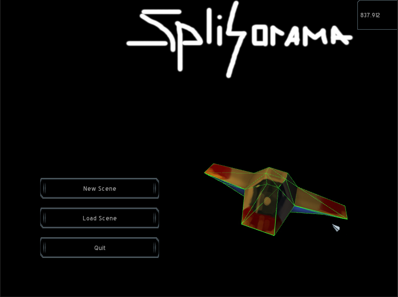 | 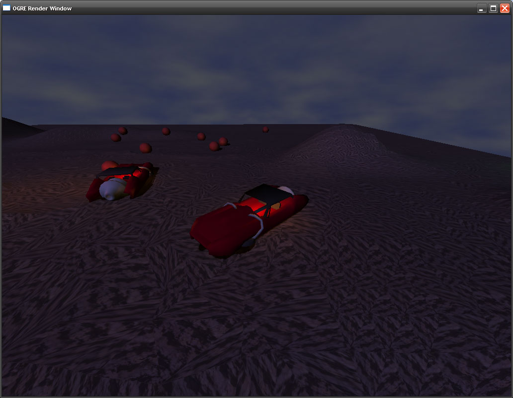 | 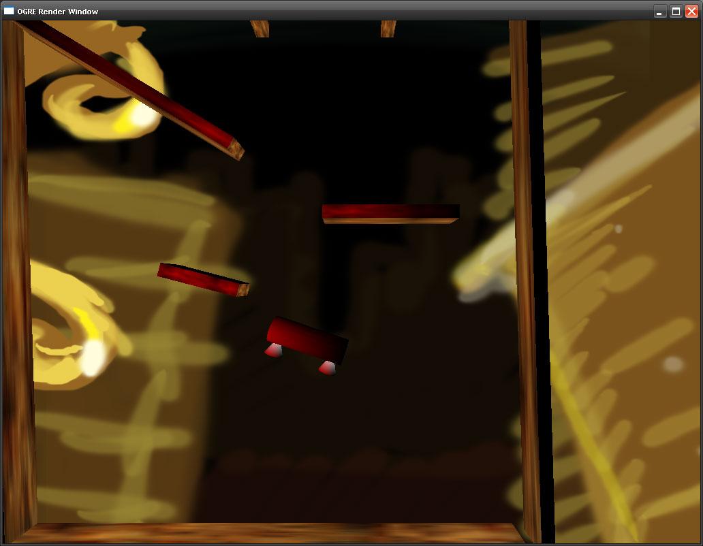 |
(Warning, programmer graphics!) |
For the final year project for my B.CS. I developed a system which allows a physical simulation of a character, i.e. a ragdoll, to be animated by multiple simultaneous control systems, acting as a layer between a character and it's motions.
These control systems can be based on many different techniques, such as premade animations, biomechanically inspired algorithms or inverse kinematics, all gathered under an uniform interface to be used as a diverse yet simple-to-use toolbox of motions for the controlling AI.
The application that was used as a basis for evaluating the system can be downloaded below. It was built on top of an active ragdoll example written for GDC 2005 by Michael Mandel.
activeragdoll.zip (364kb)
| 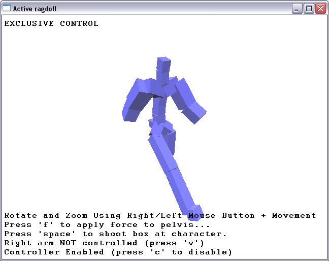 | 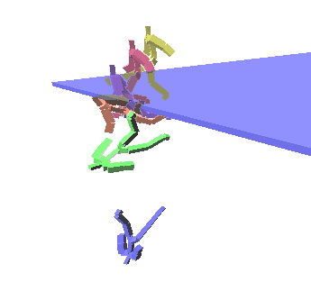 |
Sandman is a third person action-adventure game set in a pseudo-English city during the latter half of the 19th century. In it players follow Sandman in his quest to rid the night of blackened butterflies. The game was created as a total conversion of the Doom3 engine.
I was responsible for programming the player interaction (i.e. coding the physics for player movement and interaction to be more suitable for a 3rd person game), scripting all enemy AI (a dog with the ability to dissolve into a cloud of butterflies to get to hard to reach places, amongst others) and making a LOD system allowing the engine to cope with a large city.
You can watch the trailer here (on YouTube) or download the total conversion below. Installation is simply a matter of copying the 'Sandman' folder into your Doom3 folder. Beware, it's a pretty hefty download.
sandman.rar (187 mb)
| 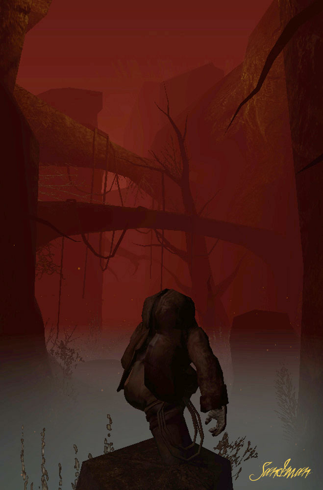 | 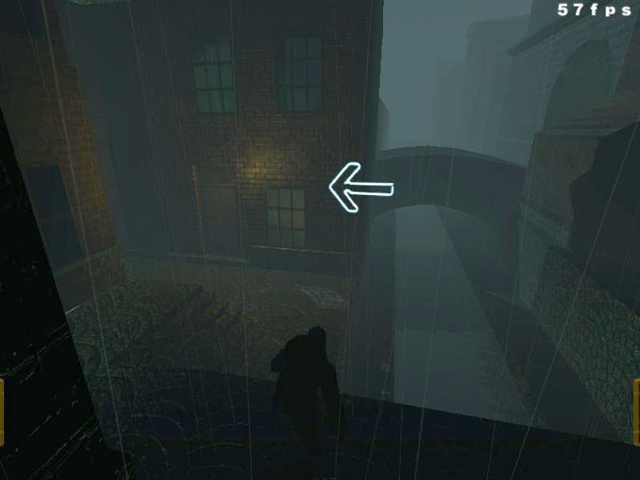 | 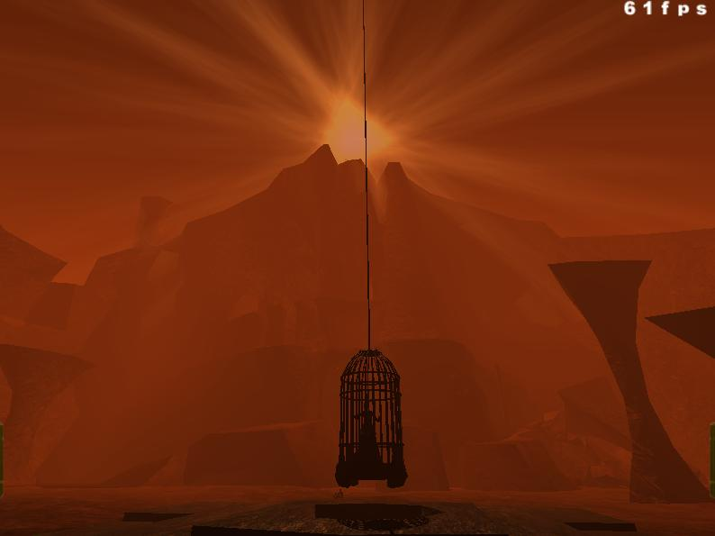 |
A simple framework dealing with the logics involved in creating a Graphical User Interface (GUI)
Written as an assignment in writing professional software components in C++. Examplifies how to use insulation, levelization and component testing to create solid, easy-to-use components.
Source code with manuals are available aswell as a tutorial on how to use the framework (in Swedish)
sgf.zip (374kb)
| 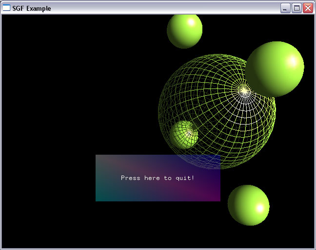 |
Second prize winner of Swedish Game Awards 2006 with the motivation: "A very well polished and complete strategy game with thought through rules that enticed the jury to continued play..." (http://www.excitera.nu/sga06)
Pax is a strategic cardgame using standard cards but not so standard rules. Programmed gameplay and network-multiplay. Unfortunately not available for download due to pending commercialisation.
| 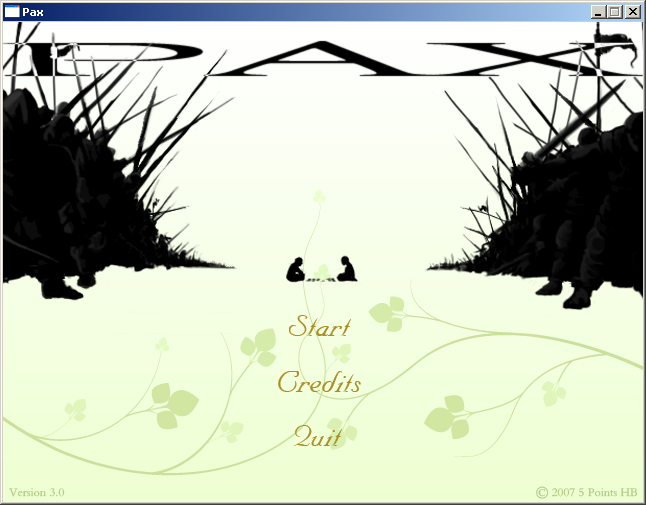 | 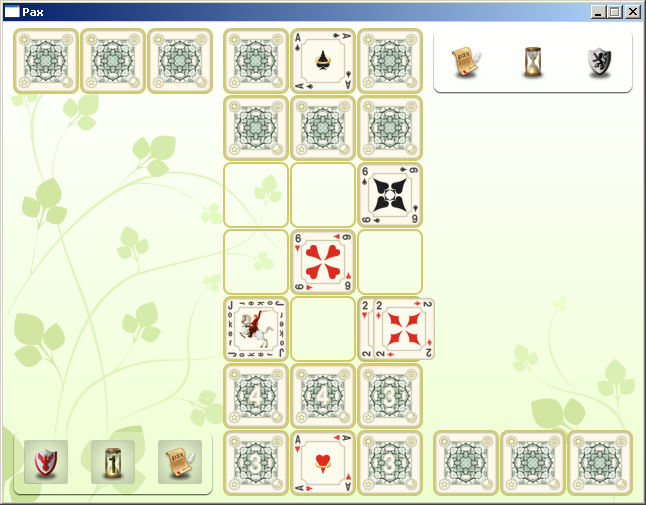 |
A game made as an example of how to use a rigid body physics system developed for a course in physics. The player builds machines by painting beams, connecting them with springs and adding rotating engines. The goal is to reach the end of the stage with as much mass (beams are heavy) as possible at such a low cost as possible (engines are expensive)
amazingmachines.zip (1084kb)
| 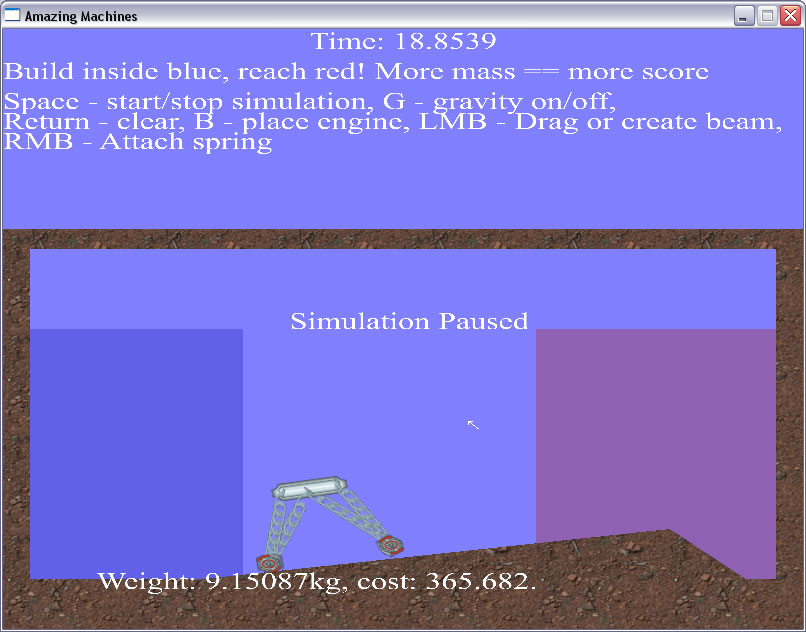 |